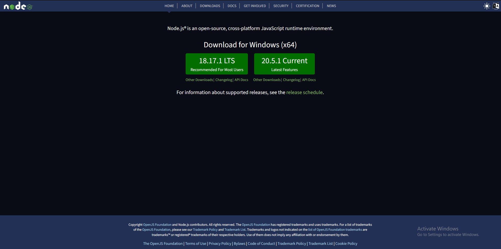
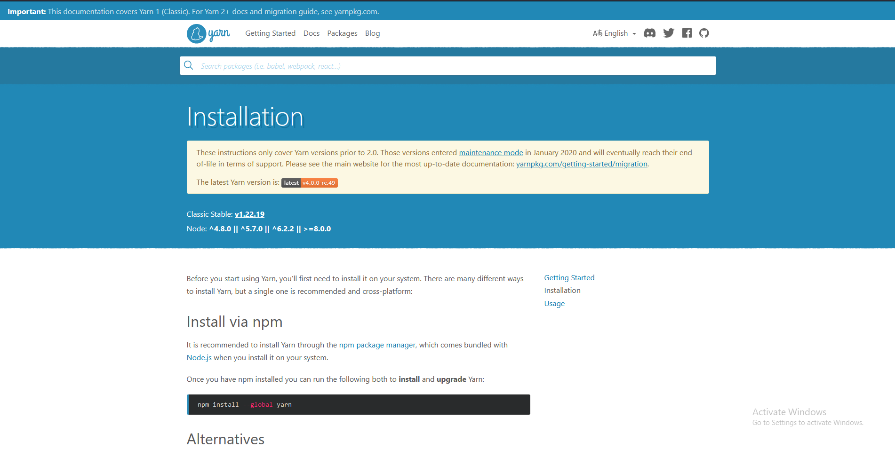
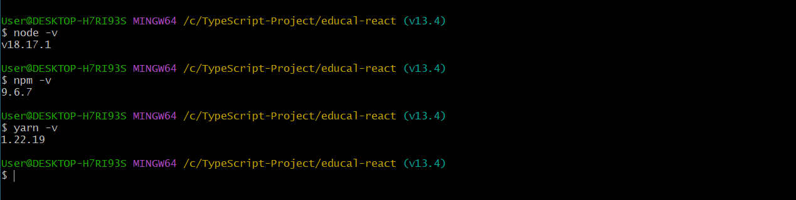
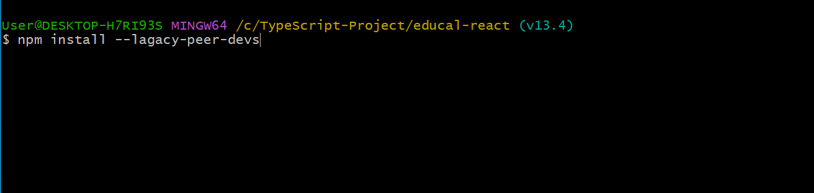
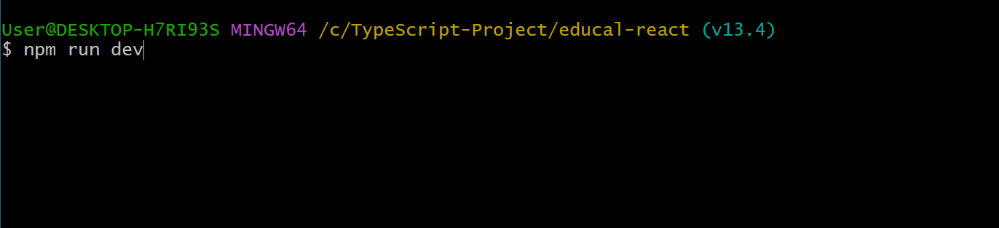
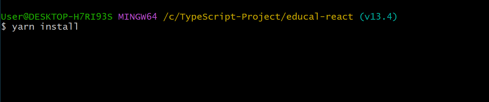
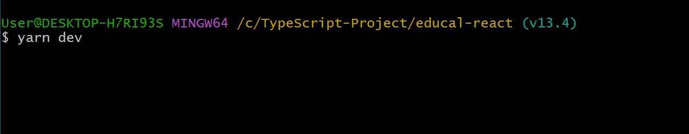

Your computer must have installed nodejs to run this template. You can download Node.js from https://nodejs.org. NPM comes bundled with Node.js
Your computer must have installed Yarn globaly to run this template by yarn. You can install yarn globaly by follow this url https://classic.yarnpkg.com/lang/en/docs/install/#windows-stable
Make sure your node , npm & yarn version match with Recommended
You must have to install npm packages. You can do this by running npm install --legacy-peer-deps from the root of your project to install all the necessary dependencies.
Run npm run dev from the root of your project to start a dev server. Navigate to http://localhost:3000/. The app will automatically reload if you change any of the source files.
You must have to install npm packages. You can do this by running yarn install from the root of your project to install all the necessary dependencies.
Run yarn dev from the root of your project to start a dev server. Navigate to http://localhost:3000/. The app will automatically reload if you change any of the source files.
